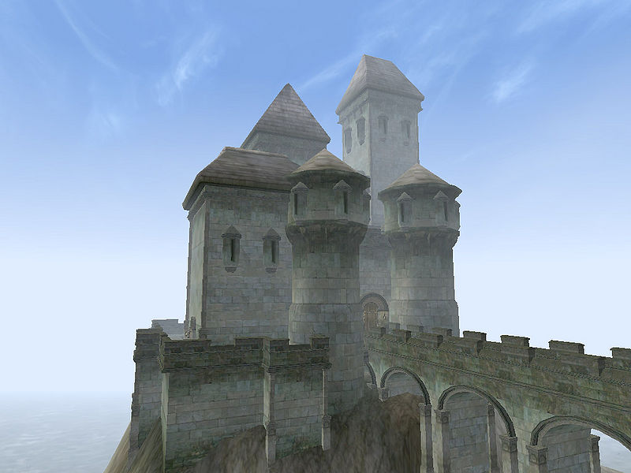

Morrowind:Ebonheart
Morrowind: Places
| Ebonheart |
| Alignment: Imperial |
| Region: Ascadian Isles |
|
Transport:
Almsivi Intervention:
Divine Intervention:
Boat:
|
Services:
|
 |
 The Dragon Statue in Ebonheart |
View from the Battlements |
|  The Grand Council Hall and Imperial Chapels |
Ebonheart is the seat of Imperial authority in Vvardenfell. From this city, the Duke of Ebonheart, Vedam Dren, and his Grand Council determine law and policy for the Vvardenfell administrative district. The Imperial Chapels serve the Duke, his retainers and the castle's garrisons, and are also an administrative center for Imperial Cult presence.
An Imperial Guard unit protects the Duke, and the Hawkmoth Legion is also garrisoned within the walls of the castle. Much of the business in Vvardenfell, which concerns either the Empire or House Hlaalu, is conducted in Castle Ebonheart, as the Hlaalu Grandmaster is the Duke himself.
Because the East Empire Company is chartered directly by the Emperor, its offices, warehouses and docks are adjacent to the castle, and its security is assured by the Imperial garrisons. The provinces of Skyrim and Black Marsh maintain diplomatic missions in Ebonheart, the latter mainly in concern for its citizens, due to the fact that the Morrowind province is exempt from the abolition of slavery.
Dragon Square, Harbor, and East Empire Trading Company
The Dragon Square forms the entrance to the castle. As the name suggests, in the center of the square is a statue of a dragon. At the harbor, the shipmaster of the Chun-Ook can take you to Vivec, Hla Oad, Tel Branora and Sadrith Mora. After a certain point in the Main Quest, Blatta Hateria can take you fishing to the Holamayan Monastery.
Canctunian Ponius is in charge of the East Empire Company, and their warehouses on the square hold a variety of goods. The Inn Six Fishes provides sundries and beds.
Hawkmoth Garrison
The Legion in the Hawkmoth Garrison protects Ebonheart and the Duke. Frald the White is the ranking commanding officer and Quest giver for the Imperial Legion. Downstairs, the smith Sirollus Saccus offers a decent selection and special repair hammers. Around the prison cells, both Nebia Amphia and Fanildil sell potions and spells. Several people offer training.
Argonian and Skyrim Mission
The Argonian Mission, a safe haven for escaped slaves, along with the Skyrim Mission, is located in the southwest corner, just off the courtyard. Im-Kilaya and other members of the Twin Lamps, including Onasha, a trainer in Acrobatics, Light Armor, and Sneak, can be found in the Argonian Mission, while various fairly unimportant Nords can be found in the Skyrim Mission.
Grand Council Chambers
Duke Vedam Dren is located upstairs, surrounded by his Dunmer and Imperial Counsel and personal Guard. He will grant you building contracts for your stronghold. Several trainers and nobles are located downstairs. An entrance to the Imperial Commission is located on the ground floor.
Imperial Chapels
The Imperial Chapels is the headquarters for the Imperial Cult on Vvardenfell. Kaye is the Shrine Sergeant and Lalatia Varian is a priest and gives Oracle Quests. Several people sell potions, scrolls, and spells. Sauleius Cullian offers enchanting and sells scrolls and enchanted items. Two quest givers for the Imperial Cult are located downstairs, and offer training. Divine Intervention brings you right to the doorstep of the Chapel.
Underground Caves
The entrance to the Underground Caves is located underwater at the northern tip of the Ebonheart island. The Lord's Mail, a Pilgrim's Lantern and several Glass weapons can be found here. The Imperial Commission has a hidden and highly locked (95) second entrance to the caves, in the Imperial Shrine room. There are some clues leading to the door in that room if you look carefully.
People
Duke Vedam Dren is upstairs in the Grand Council Chambers, while the rest of the Grand Council can be found on the ground floor, to the left of the main entrance to the Castle.
Getting There and Around
From Dragon Square, the road heading west leads to Pelagiad and Seyda Neen. Vivec can be reached by boat or Almsivi Intervention. The plantations in the Ascadian Isles are reached through a series of bridges.